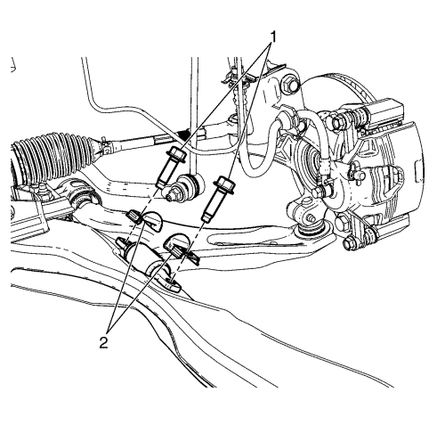
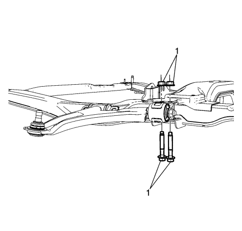
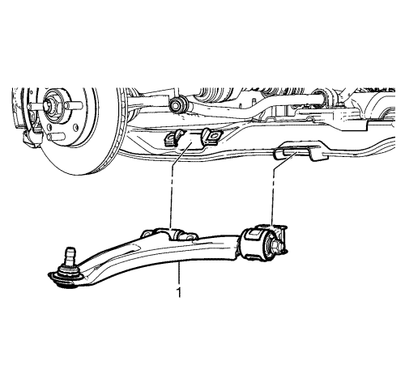

Desmonte la rótula del brazo de apoyo inferior al perno de retención de la mangueta (1) y separe la rótula de la mangueta.

Desmonte el brazo de apoyo inferior delantero a los pernos del bastidor de suspensión (1) y los soportes del casquillo de control inferior delantero (2).

Quite los tornillos y tuercas del brazo de apoyo inferior trasero al bastidor de suspensión (1).

Retire el brazo de apoyo inferior (1) del bastidor de suspensión.
Monte los pernos y tuercas del brazo de apoyo inferior trasero (1) y apriételos a 110 N·m (81 lib. pie).
Monte los soportes del casquillo del brazo de apoyo inferior delantero (2) y los pernos del brazo de apoyo inferior delantero al bastidor de suspensión (1) y apriételos a 110 N·m (81 lib, pie).
Monte la rótula del brazo de apoyo inferior en la mangueta.
Monte el perno de retención de la rótula del brazo de apoyo inferior a la mangueta (1) y apriétela a 65 N·m (81 lib. pie).